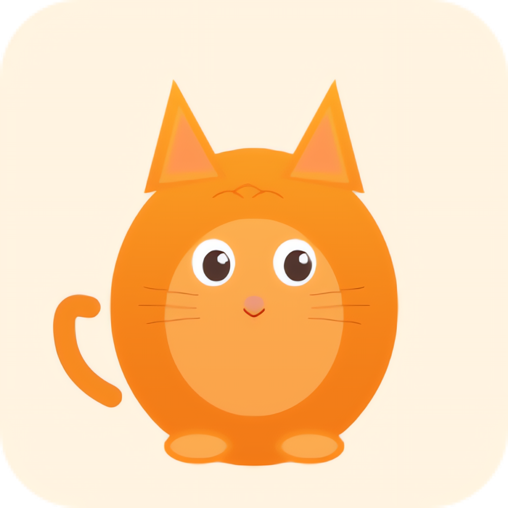

A lightweight iOS VPN client powered by mihomo (Clash.Meta), distributed as an AltStore source.
Add to AltStore Add to SideStore
Or add this URL manually in your sideloading client:
https://madeye.github.io/meow-ios/source.json